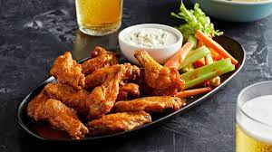

Creamy Spinach Artichoke Pizza Recipe

This is a delicious pizza that replaces the cheese!
- 4 lbs chicken wings
- 5 teaspoons baking powder
- 3/4 teaspoons salt
- 4 Tbsp unsalted butter, mixed
- 1/2 cup Frank's Original Hot Sauce
-
- 1 Tbsp brown sugar
- 1/4 tsp salt
- 1/2 cup crumbled blue cheese, softened
- 1/2 cup sour cream
- 1/4 cup mayonnaise
- 1 clove small garlic, minced
- 2 Tbsp lemon juice
- 1/2 tsp salt
- Black pepper
- Celery sticks
- If you plan ahead, lay the wings on a rack on a rimmed baking tray and let them dry uncovered in the fridge overnight. Alternatively, pat them dry with paper towels.
- Preheat the oven to 250°F/120°C (all oven types). Put one oven shelf in the lower quarter of the oven and one in the top quarter.
- Line the tray with foil. Spray the rack on the baking tray with oil.
- Place the wings in a large bowl. Sprinkle over baking powder and salt. Use hands to toss well (or shake in ziplock bag) to coat wings evenly./li>
- Place the wings skin side up on the rack (ok if snug, they shrink). Bake on the lower shelf in the oven for 30 minutes.
- Then move the tray up to the higher shelf and turn the oven up to 425°F / 220°C. Bake for a further 40 to 50 minutes, rotating the tray halfway through. The wings do not need to be turned over.
- Toss with Hot Sauce and serve immediately with Blue Cheese Dip and celery sticks. They can be served plain, with a dipping sauce or tossed in sauce. Wings also reheat crispy!
- The wings are ready when they are dark golden brown and the skin is very crispy.